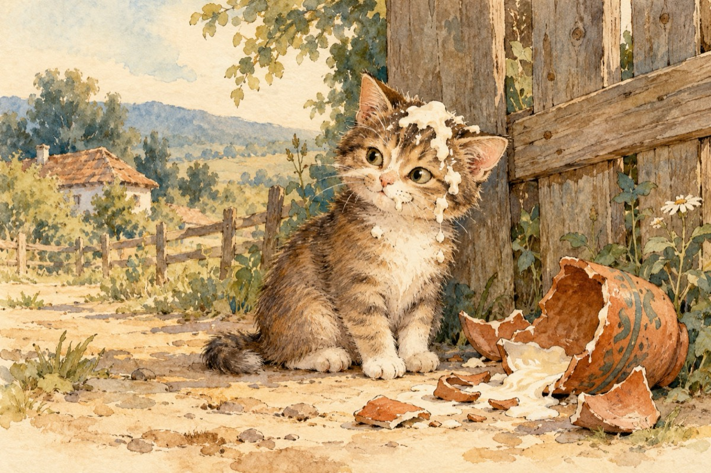

Motănelul neastâmpărat
De trei zile motănel,
N-a mai dat pe-acasă.
Unde oare-o fi umblând,
Și-a găsit mireasă!?...
Dar iată marea surpriză
Umblă-o nație-n ogradă!...
Motănel cu-o oală prinsă,
Capul neputând să-l scoată!
Furișat pe la vecină
Care are vaci cu lapte,
A vrut să mânce smântână
Neputând capul a-l scoate!...
Și de trei zile sărmanul,
Umblă-aiurea căutând,
Neputând să-și scoată capul,
În surdină mieunând!...
Dar deodată a scăpat,
Când a vrut să sară gardul.
Oala de pe cap s-a spart,
Și-acum motănel e altul!
Capul este smântânit,
Picioarele cum erau.
Corpul de-un maro-încărunțit,
Pisicile după el mieunând!...
Vasile Groza